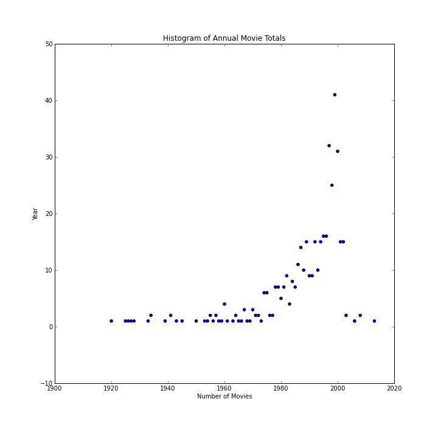
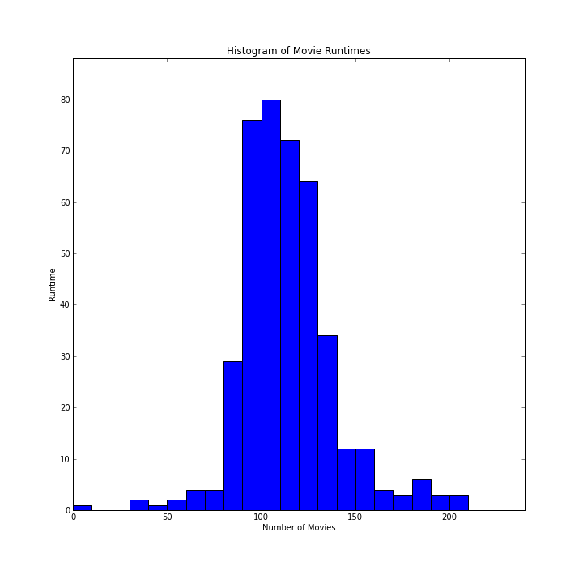
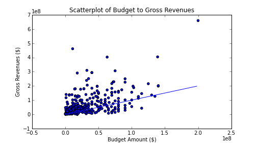

Scripting for Success in Hollywood
J. Ben Cook, W. Ryan Lee, Conor Myhrvold, and Daniel Newman
Exploratory Data Analysis
After some pre-processing, the length of the scripts follow a fairly Gaussian distribution:

This data is used to create histograms, summary statistics, and other visualizations for use in predictive and LDA analysis in later stages of this project. For example, a histogram of movie genres was created and generated the following:
Additional plots were generated for the number of movies in our data set by year:
as well as for the distribution of movies by runtimes:
Finally, to examine whether there is any signal in the naive movie budget amounts to predict gross revenues at the box office, a scatterplot was generated, with the result that there is negligible correlation between the two values:
